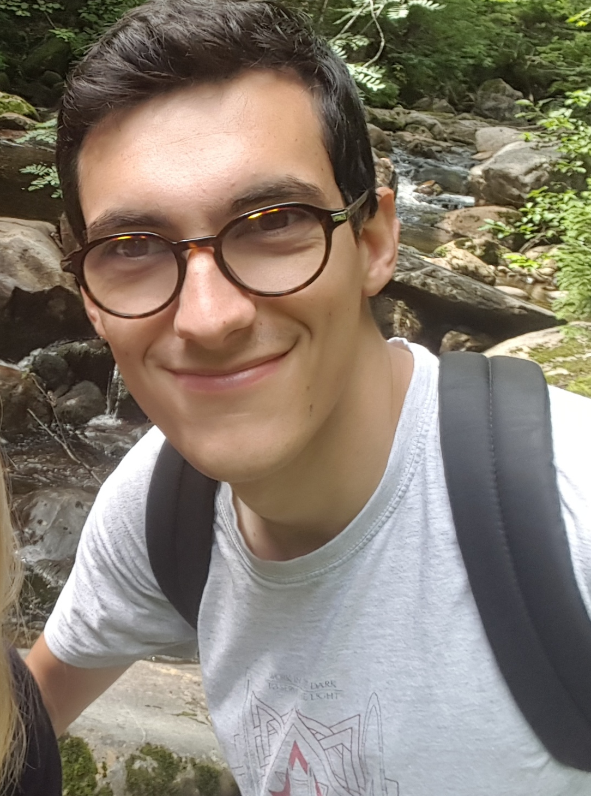

Thomas Renne Thomas Renne
Doctorant en bioinformatique Bioinformatics PhD Student

Doctorant en bioinformatique au CHU Sainte-Justine Bioinformatics PhD Student at CHU Sainte-Justine
Étudiant au doctorat en bio-informatique, au sein du laboratoire Jacquemont, je travaille sur l'interprétation et la quantification des variants génétiques structuraux et mononucléotidique rare sur la cognition et les troubles du Neurodéveloppement. Une première partie de mon travail fut le développement d'un algorithme de contrôle qualité des CNVS. DigCNV permet d'éliminer les CNVs artefactuels identifiés par les callers PennCNV et QuantiSNP.